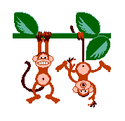

and the Forty Monkeys |
 |
nce upon a time there was a young man named Robert Appleson. He lived in a place called Appleland. It was famous for growing delicious red apples. Robert, who was known as Bobby to all his friends, had the largest apple orchard in all of Appleland. Everyone loved his apples, including the family of forty monkeys who lived in the forest nearby.
Now when it came time every year to pick his apples, Bobby did so in a very peculiar way. He would take his basket to the entrance of the orchard, go to a tree to get some apples, taking just seven apples at a time back to his basket. When he finished his day's work, he would take the basket to his house and count his apples there.
All this was fine, except for one thing. Those monkeys! When Bobby would return to the trees to get more apples, those mischievous rascals would run up to the basket and steal some of the apples. But they did so in a very peculiar way also. Each monkey would only take
four apples at a time.
Strange though it may seem to you and me, that's just the way things were in Appleland.
One Monday Bobby went to pick apples. It was at the beginning of the season and not many apples were ripe for picking. So he did not go to many trees. But when he came back to his home, he was surprised to find only 10 apples in his basket. He couldn't figure out what had happened. He knew he had gone to at least 2 trees. Can we help Bobby figure out just what happened?
SOLUTION:
Bobby had gone to 2 trees, bringing 14 apples (2 × 7) in all. But while he was gone to the second tree, a little monkey came up and took 4 apples. (7 - 4 + 7 = 10) See? It's easy.
On Tuesday Bobby went to his orchard again. He visited some trees to get apples. But you know what happened. Of course, some monkeys stole some apples while he was away. This day he counted 15 apples when he got home. How many trees did he go to, and how many monkeys stole apples from the basket?
[Use your calculator and paper-and-pencil to solve this problem carefully.
It's a little harder than the last one.]
When you finish that, find solutions for the other days of the week.
The numbers of apples in Bobby's basket each day were these:
tt(9/7/96)
Wednesday 20
Thursday 25
Friday 40
Saturday 50
When we last saw Bobby, he was having many problems picking his apples in Appleland. Those little monkeys were stealing so many apples, that he couldn't make any money selling them in the village market. So the following year he thought he would try a new idea: he would pick more apples from each tree. He decided to bring eight apples from each tree to put in his basket. "Now," he said to himself, "I'll surely have more in my basket each day."
When he arrived home on the first Monday of the next harvest season, he still found only 10 apples in the basket. He remembered that he had picked apples from exactly 5 trees. He felt he should have had 40 apples, that is, if no monkeys had come around that day.
But this time he had done something else different. He had set up a video camera to watch his basket while he returned to the trees. He wanted to see just how many monkeys came to the basket. When he played the video, he counted the monkeys. "One, 2, 3, 4, 5, 6! Six monkeys!" he exclaimed.
"That's strange," he thought. "Six monkeys and 4 apples for each monkey should mean 24 apples taken. [6 × 4 = 24] Then by subtracting, I should have 16 apples left. Hmmm." [40 - 24 = 16]
Can you help Bobby figure out just what happened?
SOLUTION:
The monkeys now are stealing more apples each time they run up to the basket. Now they take five apples. Six monkeys taking 5 apples means 30 apples stolen. [6 × 5 = 30 and 40 - 30 = 10]
Well, on Tuesday Bobby went to his orchard again. As always, he visited some trees to get apples. And, of course, some monkeys stole some apples while he was away. This day he counted 14 apples when he got home. How many trees did he go to, and how many monkeys stole apples from the basket?
When you finish that, find solutions for the other days of the week.
The numbers of apples in Bobby's basket were these:
| Wednesday | 26 |
| Thursday | 33 |
| Friday | 48 |
| Saturday | 59 |
[Be sure to keep a record in an "ACTION - RESULT" chart like last time. Also write a sentence that tells how many trees were used and how many monkeys came.]
tt(10/13/96)
This activity is an excellent experience in true problem solving, because it can be dealt with on various levels: easy, medium, and hard. It can also be done with manipulatives, then symbolically, or just symbolically. It involves the recording of data in a little chart. One can allow calculators, or forbid them, depending on your desires and/or objectives. And for the students, it's a lot of fun!
It is based on an advanced idea from number theory, but presented in a way that 4th graders can manage it. Number theory says that the expression "ax + by" can be made to equal any integer if and only if a and b are relatively prime numbers, i.e. their GCF is 1. The mathematics behind this is subtle and complicated, but need not concern us here. In our little story, it simply means that there's always a way to solve Bobby's dilemma no matter how many apples are in his basket when he returns home to count them.
For Part 1 of our story, the algebraic form is merely 7t - 4m = A, where t = the number of trees visited by Bobby, m = the number of monkeys who come to steal the apples, A = the number of apples counted by Bobby at his home. So now we say: we can always find values for t and m for any A we wish to dream up. And there's a bonus here: there is more than one pair of t-m values that can form the A. (In fact, there is an unlimited number of pairs! But that's another story.)
Now none of the foregoing need be mentioned to the average student, of course. Our presentation manner goes something like this:
Monday Monday
action | result action | result
--------|-------- --------|--------
+ 7 | 7 + 7 | 7
- 4 | 3 + 7 | 14
+ 7 | 10 - 4 | 10
One more comment. The students are expected to finalize their work with a "summary statement", that is, a simple sentence that answers the given question in the story. This is so important, now and in the future of one's math experience. The solver needs to reflect back after all the computation has been done, to see if the problem really has been, in fact, solved.
Tuesday
action | result
---------|-----------
+7 | 7
+7 | 14
+7 | 21 Bobby went to 5 trees and
-4 | 17 5 monkeys came to steal apples.
-4 | 13
+7 | 20
-4 | 16
-4 | 12
+7 | 19
-4 | 15
Finally, Part 2 of the story allows the teacher a natural follow-up extention for assessment: to see if the students can apply the concepts learned to a new, yet similar, situation. Again, the number theory part of the math is at work. The expression now becomes 8t - 5m = A, of course. But everything else remains pretty much as it was before: T-chart presentation, multiple solutions, summary statements, etc. And a lot of good math is learned by all!
tt(11/02/96)
| Comments? Send e-mail. | Back to top | Go back to Home Page | Go back to Contents |